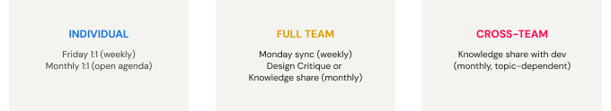
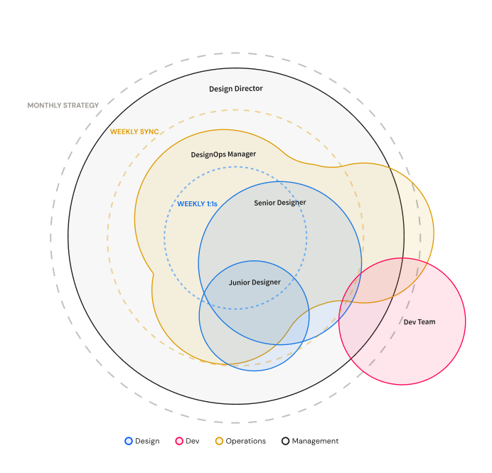

Following rapid growth and a shift to fully remote, the design org was showing signs of fragmentation. The team had grown from 4 to 8 designers, all embedded in separate product teams. With less natural contact outside their own squads, shared learning and alignment were slipping.
As the team scaled remotely, cohesion and cross-project collaboration began to degrade. Designers felt isolated within their product teams. Knowledge sharing became inconsistent and informal, and design quality risked becoming uneven across the organization.
Motivation wasn't the problem. The challenge was building the structure to hold a remote team together: the rituals, the trust, and the leadership presence that proximity had provided naturally.
- Fully remote setup with limited informal interaction
- Designers embedded across multiple product teams
- Need to rebuild cohesion without disrupting delivery
Each week had two fixed touchpoints. Mondays I opened with the full team: a brief sync to start the week together, present our milestones and check in. Fridays, I met with each designer individually. They came prepared with their top three things from the past week and three for the week ahead. We'd go through what got done, what got stuck, where they needed support. The Friday timing was intentional: a moment to see their own progress, and to return Monday knowing exactly what to work on and why.
Monthly, the team rotated between a design critique and a knowledge-sharing session. The knowledge share sometimes brought in dev, depending on the topic. Separately, each designer had a monthly 1:1, fully theirs to set the agenda.

Weekly and monthly ritual cadence designed to rebuild cohesion across a distributed team.
The shift was gradual but tangible.
Team meetings became noticeably more comfortable over time. Designers who had been quiet contributors started showing up differently: more willing to share work in progress, more engaged in giving and receiving feedback. The rituals created a consistent container for connection that the remote setup had removed.
Engagement extended beyond the meetings themselves: designers began referencing each other's work across projects, picking up threads from sessions in async conversations, and checking in with each other in ways that hadn't happened before.
When we introduced early conversations around AI tooling, the culture absorbed new practices more easily because the habit of learning together was already established.

Design operations model: the structure and rituals that supported the team through remote scaling.
Two things stood out once I started paying attention. In group settings, designers who hadn't worked together had nothing to draw on yet: no shared context, no trust. The critiques built that slowly. One-on-one, I was hearing things that had been building: concerns about direction, questions about growth, nowhere to take them. The mentorship structure gave that somewhere to go. Both were what the remote setup had removed. The team started to feel like a team.